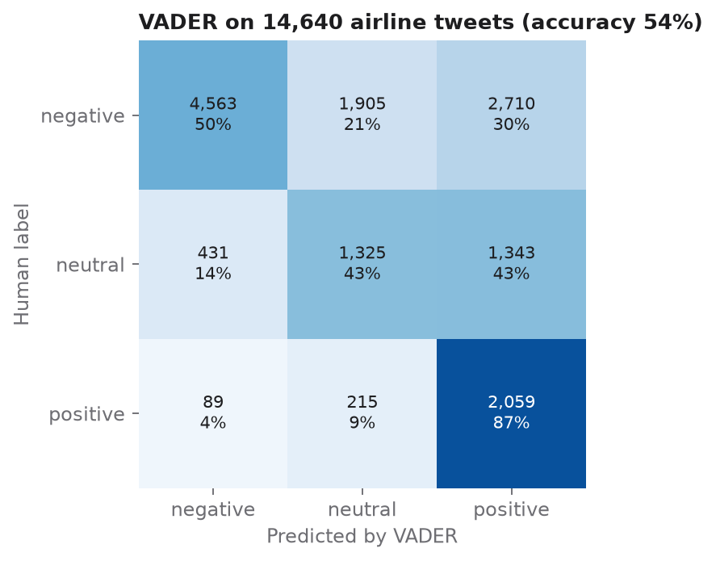
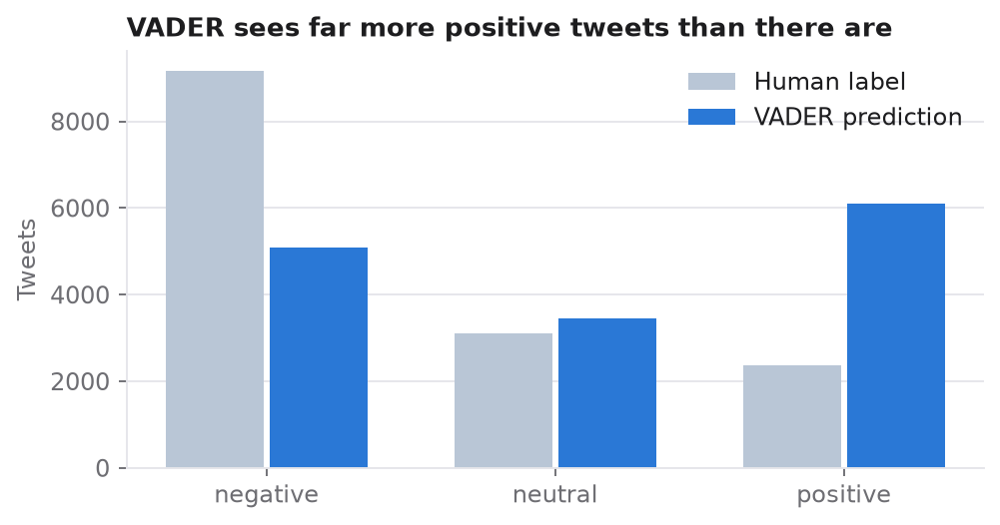

The data
The Twitter US Airline Sentiment dataset contains 14,640 tweets about six US airlines. Human annotators labelled each tweet as positive, neutral or negative and tagged the reason for each complaint.
An interactive dashboard
I built a Streamlit dashboard for exploring the data. It works in English and Hungarian, and every setting lives in the sidebar: a random tweet of the chosen sentiment, tweet counts by sentiment and by airline as bar or pie charts, an hour-of-day slider with the raw data, a side-by-side sentiment breakdown of the chosen airlines and a word cloud for each sentiment.
Can a lexicon read passengers' mood?
VADER (Valence Aware Dictionary and sEntiment Reasoner, part of NLTK) was designed for social media text. It handles slang, emoticons, capital letters and punctuation, and it accounts for intensifiers ("very good") and dampeners ("slightly bad"). It needs no training. I compared its predictions with the human labels on all 14,640 tweets.


Conclusions
Social media complaints are dominated by service issues, and an interactive dashboard makes the patterns easy to explore by airline and time of day. A dictionary-based tool like VADER is fast and needs no training, but on real customer complaints it misses half of the negative messages and over-predicts positive ones, because a word list cannot read context such as sarcasm or polite phrasing in an angry message. This is the gap that the LLM benchmark shows modern language models closing.